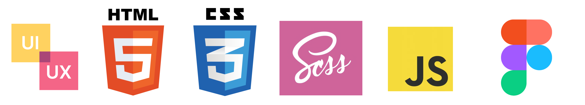

Ontwikkeling en vaardigheden
Vaardigheden
Tijdens mijn tijd in Fontys heb ik verschillende vaardigheden geleerd over UI/ UX design, graphic design, en programmeren in verschillende platformen van web tot mobile. Het kennisgebied waar ik de grootste kennis en motivatie voor heb ik front-end webdevelopment, waarin ik de grootste deel op mijn opleiding eraan werkte in verschillende projecten en het meest aansluit bij mij interesses.
Waarom front-end?
Sinds kind heb ik altijd interesse genomen in het creeëren van visuele vormen, vooral bij tekenen en recent ook videogame modding. In het begin gebruikte ik vaak premade middelen, maar met meer kennis kon ik ook alles van scratch maken met gelijke genot. Dezelfde gevoel met heb ik ook front-end webdevelopment, waarmee ik bezig kan zijn met de uiterlijk en gebruikservaring om een website te ontwerpen die prettig wordt gebruikt door iedereen.
Wat ik kan, en wat ik wil leren
Tijdens mijn studie heb ik enkele vaardigheden geleerd met middels van studenten -en persoonlijke projecten. De meeste kennis ligt in HTML, (S)CSS en Javascript, waarmee ik een basis responsieve website kan bouwen. Ernaast kan ik ook werken met front-end development op Android, basis Kotlin, en UI/ UX. Van UI/ UX software heb ik meeste ervaring met Figma, maar ik kan ook altijd leren en werken met andere applicaties zoals Adobe XD.
Natuurlijk sta ik er ook altijd voor open om nieuwe vaardigheden te leren. Ik ben bereid om alles te leren om aan het project te werken, waaronder libraries, frameworks, best practices, etc. Ook wil ik leren om meer effectief te communiceren met andere collegas om tot een goede samenwerking uit te komen.
Geinteresseerd? Neem contact via: jennykimdoan@gmail.com